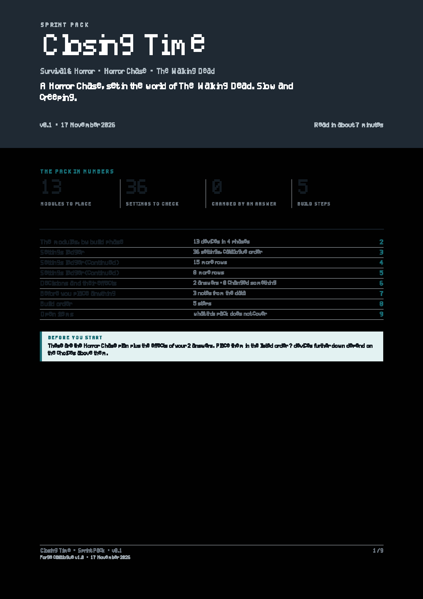
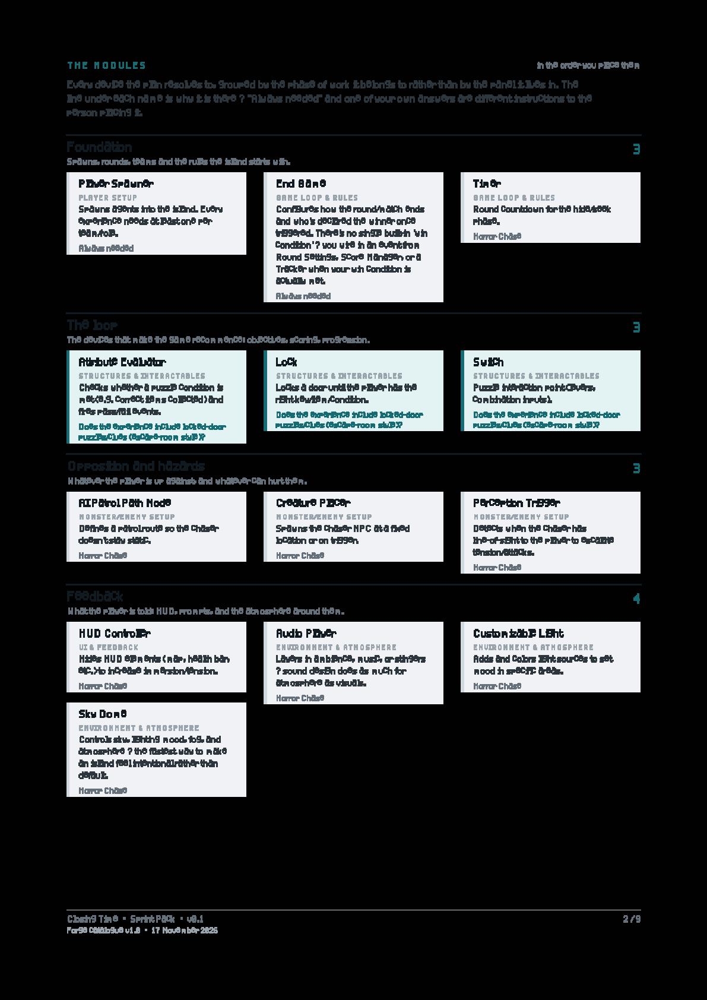
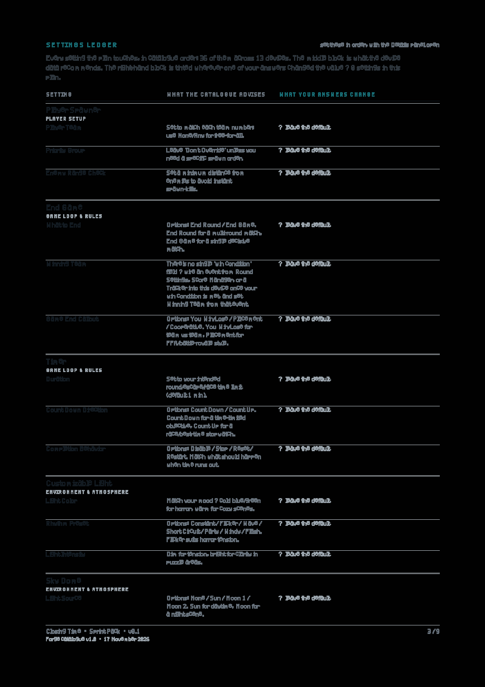
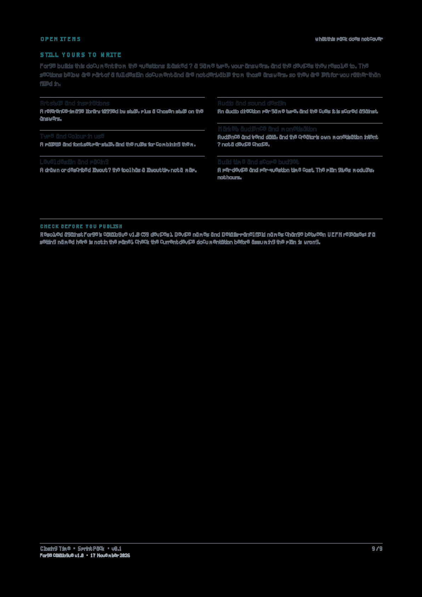

Design document · Structure B
The Sprint Pack
Nine pages, for getting it built. Organised by the order you work in rather than by topic, so the page you need is the page you are on.
What is in it
The pages




Why it is laid out this way
- Order of work, not order of importance. A build plan read top to bottom should not require skipping. Phases come from the roles the device catalogue already assigns, and the pack groups by those rather than inventing an order.
- The ledger is the middle of the document, not an appendix. Settings are what actually take the time, so they get the most pages — and the ones an answer changed are tinted, which turns a 36-row wall into a short list plus background.
- Cards carry their own provenance. Each module says which source asked for it, so a device that came from a randomiser rather than from the game type is visibly optional.
- Every break is measured. Card height and row height are computed by the same function that draws them, so a card cannot be measured onto one page and drawn on the next.
What this structure is bad at
It is not persuasive
Nine pages is a bad way to ask for a yes. There is no pitch, no single sentence to quote, and page 1 assumes you have already decided.
It is not checkable
It tells you what to do. It does not offer any way to confirm the plan is internally consistent — no totals, no traceability.
The tinted column is load-bearing
If a future question changes forty settings rather than four, the ledger stops being scannable and the whole structure needs rethinking.
How it is made
Generated by tools/gdds/render.mjs from the same document model as the other two, using base‑14 fonts and a dependency‑free PDF writer. Pagination is measured, not guessed: the renderer runs once to count pages and once more so the footers can say 3 / 9.
These are mockups: nothing here is wired into the app yet. The PDF is a real file, generated by node tools/gdds/render.mjs sprint.